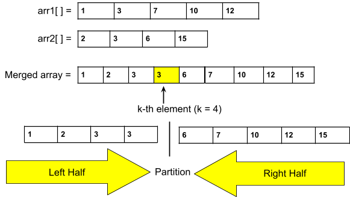

Problem Statement: Given two sorted arrays of size m and
n respectively, you are tasked with finding the element that would be at the kth
position of the final sorted array.
Disclaimer: Don’t jump directly to the solution, try it out
yourself first. Problem Link
Naive Approach (Brute-force)
Algorithm / Intuition
The extremely naive approach is to merge the two sorted arrays and then find the K-th element
in
that merged array.
How to merge two sorted arrays:
The word “merge” suggests applying the merge step of the merge sort algorithm . In that step,
we
essentially perform the same actions as required by this solution. By using two pointers on
two
given arrays, we fill up the elements into a third array.
Approach:
We will use a third array i.e. arr3[] of size (m+n) to store the elements of the two
sorted arrays.
Now, we will take two pointers i and j, where i points to the first element of arr1[]
and j points to the first element of arr2[].
Next, using a while loop( while(i < m && j < n)), we will select two elements i.e.
arr1[i] and arr2[j], and consider the smallest one among the two. Then, we will
insert the smallest element in the third array and increase that specific pointer by
1.
If arr1[i] < arr2[j] : Insert arr1[i] into the third array
and increase i by 1.
Otherwise : Insert arr2[j] into the third array and
increase j by 1.
After that, the left-out elements from both arrays will be copied as it is into the
third array.
Now, the third array i.e. arr3[] will be the sorted merged array. Now the k-th will be
the arr3[k-1].
Finally, we will return the value of arr3[k-1].
Dry-run: Please refer to the attached video for a detailed dry-run.
Code
#include <bits/stdc++.h>
using namespace std;
int kthElement(vector<int> &a, vector<int>& b, int m, int n, int k) {
vector<int> arr3;
//apply the merge step:
int i = 0, j = 0;
while (i < m && j < n) {
if (a[i] < b[j]) arr3.push_back(a[i++]);
else arr3.push_back(b[j++]);
}
//copy the left-out elements:
while (i < m) arr3.push_back(a[i++]);
while (j < n) arr3.push_back(b[j++]);
return arr3[k - 1];
}
int main()
{
vector<int> a = {2, 3, 6, 7, 9};
vector<int> b = {1, 4, 8, 10};
cout << "The k-ht element of two sorted array is: " <<
kthElement(a, b, a.size(), b.size(), 5) << '\n';
}
Output: The k-th element of two sorted arrays is: 6
import java.util.*;
public class tUf {
public static int kthElement(ArrayList<Integer> a, ArrayList<Integer> b, int m, int n, int k) {
ArrayList<Integer> arr3 = new ArrayList<>();
// apply the merge step:
int i = 0, j = 0;
while (i < m && j < n) {
if (a.get(i) < b.get(j)) arr3.add(a.get(i++));
else arr3.add(b.get(j++));
}
// copy the left-out elements:
while (i < m) arr3.add(a.get(i++));
while (j < n) arr3.add(b.get(j++));
return arr3.get(k - 1);
}
public static void main(String[] args) {
ArrayList<Integer> a = new ArrayList<>();
a.add(2); a.add(3); a.add(6); a.add(7); a.add(9);
ArrayList<Integer> b = new ArrayList<>();
b.add(1); b.add(4); b.add(8); b.add(10);
System.out.println("The k-th element of two sorted arrays is: " +
kthElement(a, b, a.size(), b.size(), 5));
}
}
Output: The k-th element of two sorted arrays is: 6
def kthElement(a, b, m, n, k):
arr3 = []
# Apply the merge step:
i, j = 0, 0
while i < m and j < n:
if a[i] < b[j]:
arr3.append(a[i])
i += 1
else:
arr3.append(b[j])
j += 1
# Copy the left-out elements:
arr3.extend(a[i:])
arr3.extend(b[j:])
return arr3[k - 1]
if __name__ == "__main__":
a = [2, 3, 6, 7, 9]
b = [1, 4, 8, 10]
print("The k-th element of two sorted arrays is:", kthElement(a, b, len(a), len(b), 5))
Output: The k-th element of two sorted arrays is: 6
function kthElement(a, b, m, n, k) {
let arr3 = [];
// apply the merge step:
let i = 0, j = 0;
while (i < m && j < n) {
if (a[i] < b[j]) arr3.push(a[i++]);
else arr3.push(b[j++]);
}
// copy the left-out elements:
while (i < m) arr3.push(a[i++]);
while (j < n) arr3.push(b[j++]);
return arr3[k - 1];
}
let a = [2, 3, 6, 7, 9];
let b = [1, 4, 8, 10];
console.log("The k-th element of two sorted arrays is: " +
kthElement(a, b, a.length, b.length, 5));
Output: The k-th element of two sorted arrays is: 6
Complexity Analysis
Time Complexity: O(m+n), where m and n are the sizes of the given
arrays. Reason: We traverse through both arrays linearly.
Space Complexity: O(m+n), where m and n are the sizes of the given arrays.
Reason: We are using an extra array of size (m+n) to solve this problem.
Better Approach (Optimized space)
Algorithm / Intuition
To optimize the space used in the previous approach, we can eliminate the third array used to
store the final merged result. After closer examination, we realize that we only need the
k-th element at index (k-1), rather than the entire merged array, to solve the problem
effectively.
We will stick to the same basic approach, but instead of storing elements in a separate
array, we will use a counter called 'cnt' to represent the imaginary third array's index. As
we traverse through the arrays, when 'cnt' reaches the index (k-1), we will store that
particular element. This way, we can achieve the same goal without using any extra space.
Approach:
We will declare the counter called ‘cnt’ and initialize it with 0.
Now, as usual, we will take two pointers i and j, where i points to the first element of
arr1[] and j points to the first element of arr2[].
Next, using a while loop( while(i < m && j < n)), we will select two elements i.e.
arr1[i] and arr2[j], and consider the smallest one among the two. Then, we will
increase that specific pointer by 1. In addition to that, in each iteration, we will
check if the counter ‘cnt’ hits the indicex (k-1). when 'cnt' reaches that index, we
will store that particular element. We will also increase the ‘cnt’ by 1 every time
regardless of matching the conditions.
If arr1[i] < arr2[j] : Check ‘cnt’ to perform necessary
operations and increase i and ‘cnt’ by 1
Otherwise : Check ‘cnt’ to perform necessary operations
and increase j and ‘cnt’ by 1.
After that, the left-out elements from both arrays will be copied as it is into the
third array. While copying we will again check the above-said conditions for the
counter, ‘cnt’ and increase it by 1.
Finally, we will return the value of the k-th element stored in the variable.
Dry-run: Please refer to the attached video for a detailed dry-run.
Code
#include <bits/stdc++.h>
using namespace std;
int kthElement(vector<int> &a, vector<int>& b, int m, int n, int k) {
int ele = -1;
int cnt = 0; //counter
//apply the merge step:
int i = 0, j = 0;
while (i < m && j < n) {
if (a[i] < b[j]) {
if (cnt == k - 1) ele = a[i];
cnt++;
i++;
}
else {
if (cnt == k - 1) ele = b[j];
cnt++;
j++;
}
}
//copy the left-out elements:
while (i < m) {
if (cnt == k - 1) ele = a[i];
cnt++;
i++;
}
while (j < n) {
if (cnt == k - 1) ele = b[j];
cnt++;
j++;
}
return ele;
}
int main()
{
vector<int> a = {2, 3, 6, 7, 9};
vector<int> b = {1, 4, 8, 10};
cout << "The k-ht element of two sorted array is: " <<
kthElement(a, b, a.size(), b.size(), 5) << '\n';
}
Output: The k-th element of two sorted arrays is: 6
import java.util.*;
public class Main {
public static int kthElement(ArrayList<Integer> a, ArrayList<Integer> b, int m, int n, int k) {
int ele = -1;
int cnt = 0; //counter
// apply the merge step:
int i = 0, j = 0;
while (i < m && j < n) {
if (a.get(i) < b.get(j)) {
if (cnt == k - 1) ele = a.get(i);
cnt++;
i++;
} else {
if (cnt == k - 1) ele = b.get(j);
cnt++;
j++;
}
}
// copy the left-out elements:
while (i < m) {
if (cnt == k - 1) ele = a.get(i);
cnt++;
i++;
}
while (j < n) {
if (cnt == k - 1) ele = b.get(j);
cnt++;
j++;
}
return ele;
}
public static void main(String[] args) {
ArrayList<Integer> a = new ArrayList<>();
a.add(2); a.add(3); a.add(6); a.add(7); a.add(9);
ArrayList<Integer> b = new ArrayList<>();
b.add(1); b.add(4); b.add(8); b.add(10);
System.out.println("The k-th element of two sorted arrays is: " +
kthElement(a, b, a.size(), b.size(), 5));
}
}
Output: The k-th element of two sorted arrays is: 6
def kthElement(a, b, m, n, k):
ele = -1
cnt = 0 # counter
# apply the merge step:
i, j = 0, 0
while i < m and j < n:
if a[i] < b[j]:
if cnt == k - 1:
ele = a[i]
cnt += 1
i += 1
else:
if cnt == k - 1:
ele = b[j]
cnt += 1
j += 1
# copy the left-out elements:
while i < m:
if cnt == k - 1:
ele = a[i]
cnt += 1
i += 1
while j < n:
if cnt == k - 1:
ele = b[j]
cnt += 1
j += 1
return ele
a = [2, 3, 6, 7, 9]
b = [1, 4, 8, 10]
print("The k-th element of two sorted arrays is:", kthElement(a, b, len(a), len(b), 5))
Output: The k-th element of two sorted arrays is: 6
function kthElement(a, b, m, n, k) {
let ele = -1;
let cnt = 0; // counter
// apply the merge step:
let i = 0, j = 0;
while (i < m && j < n) {
if (a[i] < b[j]) {
if (cnt === k - 1) ele = a[i];
cnt++;
i++;
} else {
if (cnt === k - 1) ele = b[j];
cnt++;
j++;
}
}
// copy the left-out elements:
while (i < m) {
if (cnt === k - 1) ele = a[i];
cnt++;
i++;
}
while (j < n) {
if (cnt === k - 1) ele = b[j];
cnt++;
j++;
}
return ele;
}
let a = [2, 3, 6, 7, 9];
let b = [1, 4, 8, 10];
console.log("The k-th element of two sorted arrays is: " + kthElement(a, b, a.length, b.length, 5));
Output: The k-th element of two sorted arrays is: 6
Complexity Analysis
Time Complexity: O(m+n), where m and n are the sizes of the given
arrays. Reason: We traverse through both arrays linearly.
Space Complexity: O(1), as we are not using any extra space to solve this
problem.
Optimal Approach (Using Binary Search)
Algorithm / Intuition
We are going to use the Binary Search algorithm to optimize the approach.
The primary objective of the Binary Search algorithm is to efficiently determine the
appropriate half to eliminate, thereby reducing the search space by half. It does this by
determining a specific condition that ensures that the target is not present in that half.
Note: Please refer to the article Median of 2 sorted arrays to
get a detailed overview of this optimal approach.
The optimal approach will be exactly similar to the one of the problem Median of 2 sorted arrays In
that problem, the approach is the following:
Assume, m = size of arr1[] and n = size of arr2[].
We know the median creates a partition on the final merged array. So, the array can be
divided into two halves that contain almost equal elements. So, the size of the left and
right halves is approx. (m+n) / 2.
We also discussed that for a valid merged array, the left and the right half will be
unique.
So, our approach was to form the unique left half correctly assuming that it contains x
elements from arr1[] and ((m+n)/2)-x elements from arr2[]. Now the possible range of the
variable x is [0, min(m, n)].
For all possible values of that range, we checked the configuration of the left half.
Now, to validate the left half configuration, we used the condition l1 <= r2 && l2
<=r1. These four variables refer to as follows:
We are going to use the same approach with some minor changes in the values. The changes will
be as follows:
The size of the left half will be k: Here, we don’t need to find the
median and instead, we want the k-th element. So, the partition will be after the k-th
element. So, the size of the left half will be k instead of (m+n)/2. For example,

Range of x:
The maximum possible value of x: We want to build the left
subarray of size k. So, the maximum possible value should be k. But if we are
considering arr1[] of size n1 and n1 < k, in that case, the maximum possible
value will be n1. So, after generalization, the maximum value will be
min(k, n1), where n1 = the size of the smaller array. Here n1 =
min(m, n).
The minimum possible value of x: Let’s understand this using
an example, given arr1[] size i.e. m = 6, and arr2[] size i.e. n = 5 and k =
7. Now, the lowest value of x(i.e. The no. of elements we should take from
arr1[]) should be 2. If we have to build an array of size, 7, and the
maximum element we can take from arr2[] is 5, so, we have to take a minimum
of 2 elements from arr1[].
So, the minimum possible value should be k-n2, where n2 = the size of the
not-considered array i.e. the bigger array.
But if k < n2, the k-n2, will be negative. So, to handle this case, we will
consider the minimum value as max(0, k-n2), where n2 = the size
of the bigger array, and here, n2 = max(m, n).
The new range of x will be [max(0, k-n2), min(k, n1)], where n1 = the size of the
smaller array, and n2 = the size of the bigger array. Here n1 = min(m, n) as we want
to optimize the time complexity we will consider the array with a smaller length.
And we will apply binary search in this new range.
Note: The answer will always be max(l1, l2) as the kth element will be the
maximum element of the left half.
The rest of the process will be as similar to the one used in the problem, Median of 2 sorted arrays.
Algorithm:
First, we have to make sure that the arr1[] is the smaller array. If not by default, we
will just swap the arrays. Our main goal is to consider the smaller array as arr1[].
Calculate the length of the left half: left = k.
Place the 2 pointers i.e. low and high: Initially, we will place the
pointers. The pointer low will point to max(0, k-n2), and the high will
point to min(k, n1) (i.e. n1 = The size of the smaller array, n2 = the
size of the bigger array).
Calculate the ‘mid1’ i.e. x and ‘mid2’ i.e. left-x: Now, inside the
loop, we will calculate the value of ‘mid1’ using the following formula:
The possible values of ‘mid1’ and ‘mid2’ might be 0 and n1 and n2 respectively.
So, to handle these cases, we need to store some default values for these four
variables. The default value for l1 and l2 will be INT_MIN and
for r1 and r2, it will be INT_MAX.
Eliminate the halves based on the following conditions:
If l1 <= r2 && l2 <=r1: We have found the answer. Return
max(l1, l2).
If l1 > r2:
This implies that we have considered more elements from arr1[] than
necessary. So, we have to take less elements from arr1[] and more from arr2[].
In such a scenario, we should try smaller values of x. To achieve this, we will
eliminate the right half (high = mid1-1).
If l2 > r1: This implies that we have considered more elements
from arr2[] than necessary. So, we have to take less elements from arr2[] and
more from arr1[]. In such a scenario, we should try bigger values of x. To
achieve this, we will eliminate the left half (low = mid1+1).
Finally, outside the loop, we will include a dummy return statement just to avoid
warnings or errors.
The steps from 4-6 will be inside a loop and the loop will continue until low crosses high.
Code
#include <bits/stdc++.h>
using namespace std;
int kthElement(vector<int> &a, vector<int>& b, int m, int n, int k) {
if (m > n) return kthElement(b, a, n, m, k);
int left = k; //length of left half
//apply binary search:
int low = max(0, k - n), high = min(k, m);
while (low <= high) {
int mid1 = (low + high) >> 1;
int mid2 = left - mid1;
//calculate l1, l2, r1 and r2;
int l1 = INT_MIN, l2 = INT_MIN;
int r1 = INT_MAX, r2 = INT_MAX;
if (mid1 < m) r1 = a[mid1];
if (mid2 < n) r2 = b[mid2];
if (mid1 - 1 >= 0) l1 = a[mid1 - 1];
if (mid2 - 1 >= 0) l2 = b[mid2 - 1];
if (l1 <= r2 && l2 <= r1) {
return max(l1, l2);
}
//eliminate the halves:
else if (l1 > r2) high = mid1 - 1;
else low = mid1 + 1;
}
return 0; //dummy statement
}
int main()
{
vector<int> a = {2, 3, 6, 7, 9};
vector<int> b = {1, 4, 8, 10};
cout << "The k-th element of two sorted array is: " <<
kthElement(a, b, a.size(), b.size(), 5) << '\n';
}
Output: The k-th element of two sorted arrays is: 6
import java.util.*;
public class tUf {
public static int kthElement(ArrayList<Integer> a, ArrayList<Integer> b, int m, int n, int k) {
if (m > n) return kthElement(b, a, n, m, k);
int left = k; // length of left half
// apply binary search:
int low = Math.max(0, k - n), high = Math.min(k, m);
while (low <= high) {
int mid1 = (low + high) >> 1;
int mid2 = left - mid1;
// calculate l1, l2, r1, and r2
int l1 = Integer.MIN_VALUE, l2 = Integer.MIN_VALUE;
int r1 = Integer.MAX_VALUE, r2 = Integer.MAX_VALUE;
if (mid1 < m) r1 = a.get(mid1);
if (mid2 < n) r2 = b.get(mid2);
if (mid1 - 1 >= 0) l1 = a.get(mid1 - 1);
if (mid2 - 1 >= 0) l2 = b.get(mid2 - 1);
if (l1 <= r2 && l2 <= r1) {
return Math.max(l1, l2);
}
// eliminate the halves:
else if (l1 > r2) high = mid1 - 1;
else low = mid1 + 1;
}
return 0; // dummy statement
}
public static void main(String[] args) {
ArrayList<Integer> a = new ArrayList<>();
a.add(2); a.add(3); a.add(6); a.add(7); a.add(9);
ArrayList<Integer> b = new ArrayList<>();
b.add(1); b.add(4); b.add(8); b.add(10);
System.out.println("The k-th element of two sorted arrays is: " +
kthElement(a, b, a.size(), b.size(), 5));
}
}
Output: The k-th element of two sorted arrays is: 6
def kthElement(a, b, m, n, k):
if m > n:
return kthElement(b, a, n, m, k)
left = k # length of left half
# apply binary search:
low = max(0, k - n)
high = min(k, m)
while low <= high:
mid1 = (low + high) // 2
mid2 = left - mid1
# calculate l1, l2, r1, and r2
l1 = float('-inf')
l2 = float('-inf')
r1 = float('inf')
r2 = float('inf')
if mid1 < m:
r1 = a[mid1]
if mid2 < n:
r2 = b[mid2]
if mid1 - 1 >= 0:
l1 = a[mid1 - 1]
if mid2 - 1 >= 0:
l2 = b[mid2 - 1]
if l1 <= r2 and l2 <= r1:
return max(l1, l2)
# eliminate the halves:
elif l1 > r2:
high = mid1 - 1
else:
low = mid1 + 1
return 0 # dummy statement
a = [2, 3, 6, 7, 9]
b = [1, 4, 8, 10]
print("The k-th element of two sorted arrays is:", kthElement(a, b, len(a), len(b), 5))
Output: The k-th element of two sorted arrays is: 6
function kthElement(a, b, m, n, k) {
if (m > n) return kthElement(b, a, n, m, k);
let left = k; // length of left half
// apply binary search:
let low = Math.max(0, k - n), high = Math.min(k, m);
while (low <= high) {
let mid1 = Math.floor((low + high) / 2);
let mid2 = left - mid1;
// calculate l1, l2, r1, and r2
let l1 = Number.MIN_SAFE_INTEGER, l2 = Number.MIN_SAFE_INTEGER;
let r1 = Number.MAX_SAFE_INTEGER, r2 = Number.MAX_SAFE_INTEGER;
if (mid1 < m) r1 = a[mid1];
if (mid2 < n) r2 = b[mid2];
if (mid1 - 1 >= 0) l1 = a[mid1 - 1];
if (mid2 - 1 >= 0) l2 = b[mid2 - 1];
if (l1 <= r2 && l2 <= r1) {
return Math.max(l1, l2);
}
// eliminate the halves:
else if (l1 > r2) high = mid1 - 1;
else low = mid1 + 1;
}
return 0; // dummy statement
}
let a = [2, 3, 6, 7, 9];
let b = [1, 4, 8, 10];
console.log("The k-th element of two sorted arrays is: " + kthElement(a, b, a.length, b.length, 5));
Output: The k-th element of two sorted arrays is: 6
Complexity Analysis
Time Complexity: O(log(min(m, n))), where m and n are the sizes of two given
arrays. Reason: We are applying binary search on the range [max(0, k-n2),
min(k, n1)]. The range length <= min(m, n).
Space Complexity: O(1), as we are not using any extra space to solve
this problem.
Video Explanation
Special thanks to KRITIDIPTA
GHOSH for contributing
to this article on takeUforward. If you also wish to share your knowledge with the takeUforward fam, please check out this
articlr